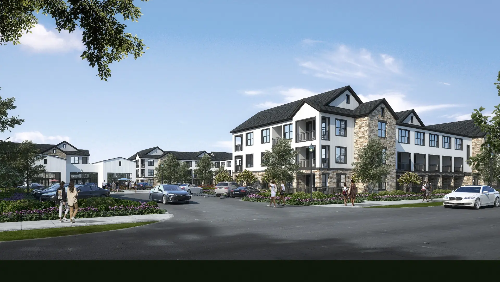
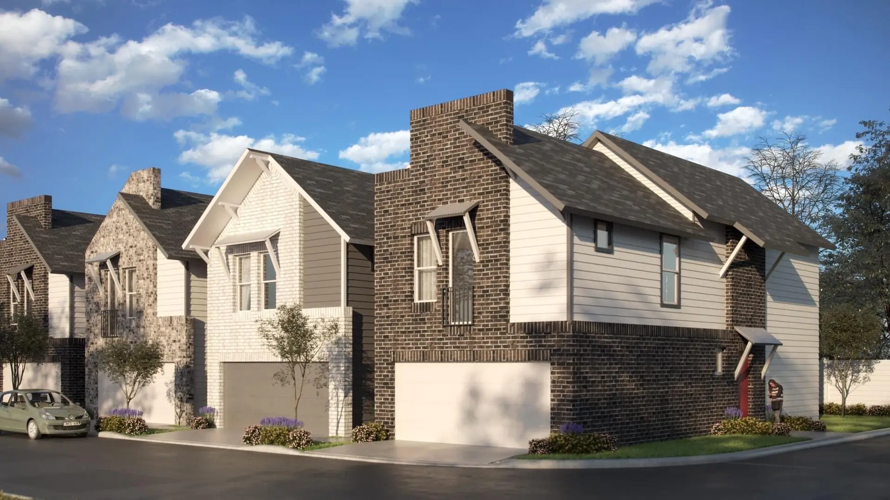
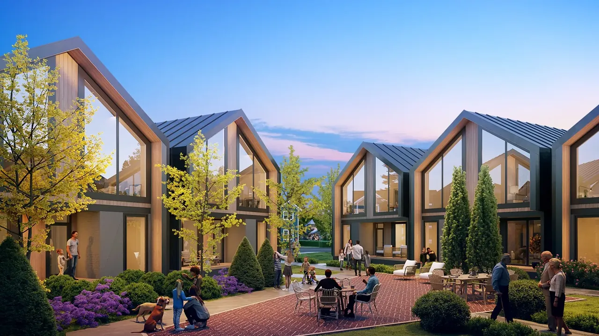

A mixed-use development bringing quality housing and retail to an underserved Dallas neighborhood. Phase 2 construction begins November 2026.

Portfolio
Developments across Texas.
Twelve active projects spanning single-family, multifamily, neighborhood retail, and mixed-use, at every stage from entitlement through stabilization.
$375M+
Stabilized value
12
Active projects
100+
Acres under development
800,000+
Portfolio sq. ft.
All Projects
 Entitlements
Entitlements
Residential · Single-Family & Multifamily
Trailblazer Village (Phase 1)
Dallas, TX
A residential village with neighborhood retail, currently working through zoning and platting.
A community-anchored market and café concept in South Dallas, profiled in CultureMap and Dallas Business Journal.
A members-only hospitality and lifestyle concept in Deep Ellum, currently in permitting review.
 Open
Open
Community · Agriculture
New Life Farms
Dallas, TX
Open and operating — a working urban farm and community space integrated into the surrounding neighborhood.
 Planning
Planning
Residential · Single-Family
Sunny Meadow
Dallas, TX
A single-family community in concept and site planning, with lot layout and amenity programming underway.
A build-to-rent townhome community designed for Beaumont’s unmet demand for spacious three-bedroom rentals.
A townhome community developed and sold in 2025.

Sold 2022Residential · Townhomes
Whitney Oak
Dallas, TX
An early Onu Ventures townhome project, developed and sold in 2022.
Project in focus
The Adaline
A 12-acre walkable community at Interstate 20 and Bonnie View Road, in a part of southern Dallas that private capital had passed over for decades.
Phase one is complete: a 4,100-square-foot market and cafe called Miss Eddie’s, BKYD — a 10,000-square-foot outdoor event space — and 5,200 square feet of leasable retail. Phase two breaks ground in November 2026, adding 198 apartments and 40 townhomes, with workforce housing intended for renters in the 65 to 90 percent AMI range.
In August 2024 the Dallas City Council approved a ten-year tax abatement and an economic development grant of up to $3.5 million toward the residential component, with 20 percent of the multifamily units designated for households at or below 80 percent of area median income.
Location
I-20 & Bonnie View Rd
Site
12 acres
Phase 1
Completed
Phase 2
Construction begins Nov 2026
Residential
198 apartments · 40 townhomes
Retail
5,200 sf leasable
Market & cafe
Miss Eddie’s — 4,100 sf
Event space
BKYD — 10,000 sf

Interested in a site, a partnership, or the pipeline?
We review land, acquisition, and capital opportunities across Texas and the Sun Belt.